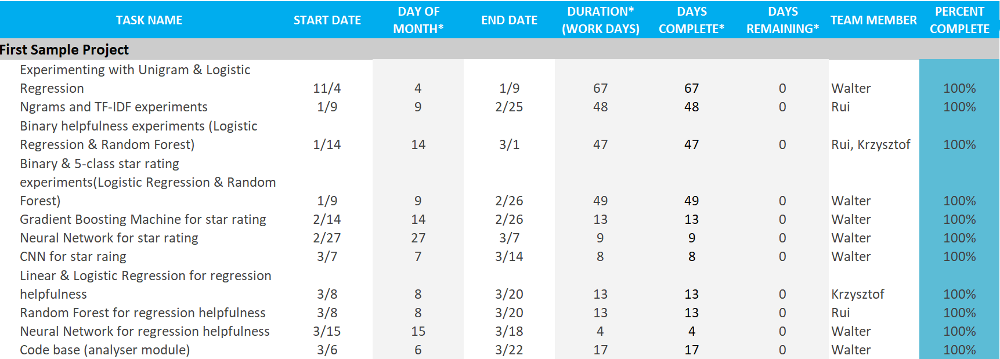
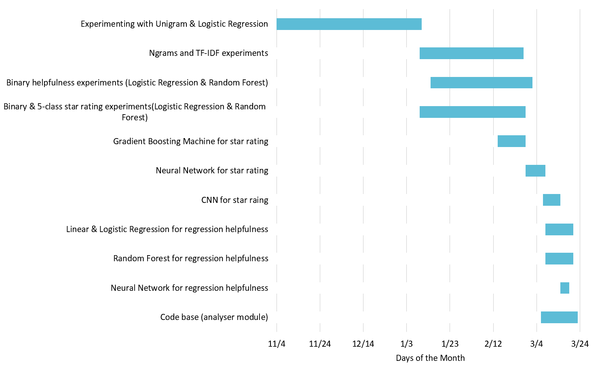

Legal Issues
Major Milestones and Quality Gates
1. Implement a “bag of words” vectorizer to learn basics of Natural Language Processing.
2. Implement the first prototype, which makes use of “bag of words” and Logistic Regression to predict if a review is positive (star rating >= 3) or not by looking at its text.
3. Carry out experiments on the prototype, including hyperparameter tuning, learning curve plotting and comparing it to a baseline method.
4. Expand the NLP vectorizer to n-grams and experiment with it.
5. Build the program with a non-linear Machine Learning model, such as Decision Tree and Random Forest, and compare its performance with linear models.
6. Try various methods on helpfulness prediction and find a suitable one through experiments.
7. Integrate the code together to produce the final deliverable.
8. Tidying up and improving research materials, Jupyter Notebooks and code base.
Team Roles and Deadlines
| Major Milestones/Quality Gates No. | Responsible Member | Deadline |
|---|---|---|
| 1 | Walter | 15th Dec 2018 |
| 2 | Krzysztof, Walter | 22nd Dec 2018 |
| 3 | Walter | 29th Dec 2018 |
| 4 | Rui | 25th Jan 2019 |
| 5 | Walter | 2nd Feb 2019 |
| 6 | Krzysztof, Walter, Rui | 3rd Mar 2019 |
| 7 | Krzysztof, Walter | 22nd Mar 2019 |
| 8 | Krzysztof, Walter, Rui | 22nd Apr 2019 |
Handover date: 22nd Apr 2019
Potential Liabilities
As a group, we have the following liabilities:
Firstly and most importantly, We need to complete and deliver a project that satisfies the agreed requirements by the deadline. Based on our discussion about this project, the final requirements are delivering some code that learns from previous-labelled data and can be used to predict rating and helpfulness if the text of a review is inputted, as well as experimenting, evaluating and improving our code to producing some research reports. The agreed deadline for project submission is 23rd April, so we have to implement the above features and hand the code to our clients and UCL. In order to achieve that, we have made several milestones or quality gates to supervise our progress, so that as long as we work according to our plan, there won’t be any issue in finishing the work.
Secondly, we should not distribute the materials and data given by our clients without their consent. Since our project involves Machine Learning on reviews, our clients have given us some materials from Ocado for teaching purposes. Considering they might be internal training materials and are protected by Copyright, we definitely can’t post them online or send them to other people. Similarly, we were also given Ocado’s website data to train our Machine Learning model. The data contains review information such as text, rating and customer ID. Although this information is posted on Ocado’s website and is visible to everyone, since it is from Ocado’s data server, we shouldn’t make it public without our clients’ permission.
Thirdly, we should not make our work public without clients’ consent. The work here mainly means the GitHub repository we made for this project. It is our clients’ requirement to make the repository private, as the review data mentioned above is inside the repository and must be hidden from the public. Moreover, according to the contract, our clients will own all the code after we finish this module and Ocado might use it in the future, it depends on them whether the project will be Open Source or private.
Intellectual Property Type
The most appropriate intellectual property type for this project would be Copyright. This is because Copyright is generally used to protect people’s original work and many software licenses are protected by it. In comparison, Trade Mark is usually used to protect an identifiable name for the product or company, and Patent is used to protect an original idea. Our project doesn’t really need an identifiable name because it won’t become very famous. Besides, since it involves code with Natural Language Processing and Machine Learning techniques, which are ideas that we have to learn from other people, we are not able to protect the work with a Patent either.
In terms of use of open source materials and our implementations, we have made use of many open sources libraries such as Pandas, Numpy, Scipy and Scikit-learn. They provide the necessary code for implementing our program and carrying out experiments on our work. Those libraries are all protected under Open Source license, which means we can use them for free as well as make changes to the code to satisfy our needs. On the other hand, our own work mainly consists of the code that makes use of those libraries to solve Machine Learning problems and research notebooks which record all the evaluations and analysis of our code.
The source code agreement that I would suggest is Freeware. Since our code is produced by university students and won’t be used to profit directly, there is no reason to make it a Proprietary Software or Shareware. Besides, because our code contains the Ocado’s review data, which is considered as confidential information and should be kept private, we can’t make our project an OSS (Open Source Software). Hence, Freeware is the best choice as it allows our product to be used by everyone while keeps control over the source code. However, this only serves as my own suggestion to the clients. According to the contract, Ocado will own all the output of this project and they tend to keep software completely confidential and not open source. This policy also makes sense, as they probably don’t want their opponents to make use of those applications to either profit for themselves or exploit Ocado’s weakness.
Data Privacy Consideration
The main concern of data privacy in our project is towards the usage of review data given by our clients from Ocado. The data is in the form of a CSV file and contains information about 0.4 million reviews left by customers on Ocado’s website. In order to protect the data privacy in our project, we would design and implement the program according to CDPR requirements.
Firstly, we promote privacy and data protection in our project. We considered the issues regarding the usage of this data and discussed it with our clients. According to their requirements, we set our GitHub repository to private to protect the data file and we never leaked it to the public or shared it to anyone that’s not part of our team.
Secondly, we use appropriate methods to process our data. We have full control over where and how data is processed. We only use the data inside the project with the famous and trustable Python data science library Pandas. We would never pass the data to other programs that are unknown to us. By doing this, we can ensure the data is used in the correct and intended way.
Thirdly, we ensure our program only processes the necessary data. For example, when doing rating prediction from review text, we only used columns of rating, review text and review title from Ocado review file, while the other columns such as user name and product ID are not processed at all.
In the last place, since the data is from Ocado and was used in other Ocado’s software before, Ocado should have conducted the Privacy Impact Assessments before using this data. Thus, I believe as long as we use the data in the intended way and keep it private, we will not have any issue with data privacy.
User Manual and Deployment Guide
The Python module is located at "./analyser", the pre-train models are stored at "./storage"
To use the pre-trained models, install all requirements in requirements.txt and download those two folders. Then use Python 3 to run:
from analyser.review_analyser import ReviewAnalyser
ra = ReviewAnalyser("./path/to/storage/")
ra.pred_ratings(["This is a very good product"])
ReviewAnalyser
init(self, storage_path="./storage/")
param storage_paththe path for storing local files. Must be a valid directory
new_rating_ml(self, x_train=None,y_train=None,filepath="./data/reviews-ranged-20181024.csv",train_size=100000, store=True)
Creating new ML for star rating. It will store the ML trained at the storage_path specified when creating the object if store is True.
param x_trainOptional training samples. Should be a list of review textparam y_trainOptional training labels. Must have same length as x_train. Should be a list of integers ranging from 1 to 5.param filepathOptional file path to Ocado review data. Only used when x_train is None. The file must have same structure as the Ocado CSV file. If above three parameters are not provided, default path to Ocado CSV will be used.param train_sizeThe number of data used to train model. Only effective when reading from Ocado CSV.param storewhether to store models locally
new_helpfulness_ml(self, x_train=None,y_train=None,x_ratings_train=None,x_votes_train=None, filepath="./data/reviews-ranged-20181024.csv",train_size=100000, store=True)
Creating new ML for helpfulness. It will store the ML trained at the storage_path specified when creating the object if store is Ture.
param x_trainOptional training samples. Should be a list of review textparam y_trainOptional training labels. Must have same length as x_train. Should be a list of floats ranging from 0 to 1.param x_ratings_trainAdditional features for training.param x_votes_trainLits of vote counts used as samples weights during trainingparam filepathOptional file path to Ocado review data. Only used when x_train is None. The file must have same structure as the Ocado CSV file. If above parameters are not provided, default path to Ocado CSV will be used.param train_sizeThe number of data used to train model. Only effective when reading from Ocado CSV.param storewhether to store models locally
pred_ratings(self, x)
Predict star ratings from the review text.
param xA list of review text.returnA list of integers within range 1 to 5 indicating the star ratings.
pred_helpfulness(self, x, x_ratings=None)
Predict helpfulness from the review text and potentially star ratings as well.
param xA list of review text.param x_ratingsA list of star ratings for the corresponding reviews. If not provided, star rating ML will be applied to predict the ratings first.returnA list of floats within range 0 to 1 indicating the helpfulness
ReviewData
A helper class for extracting data from Ocado CSV file. Should not be used on its own.
extract_words(sentence)
Static method for splitting a string into a list of words (as strings)
param sentenceString of natural languagereturnlist(string)
init(self, filepath="./../../data/reviews-ranged-20181024.csv", load_csv=True)
param filepathString representing the path to the csv file.param load_csvBoolean on whether to read a csv file upon initialization.
clear_data(self)
Clears all the review data from the object.
returnNone
recalculate_binaries(self)
Calculates data that is derived from other data.
returnNone
append_review(self, text, rating, helpfulness, votes)
Appends a single review to the data.
param textString of the review's text.param ratingInteger of the review's star rating.param helpfulnessFloat of the review's helpfulness value.param votesInteger for number of votes on the review's helpfulness.returnNone
filter_data_by_votes(self, min_votes)
Returns new instance with data containing only at least given amount of votes
param min_votesMinimum number of votes a review needs to be in new dataset.returnReviewData instance
get_rebalanced_ratings(self, size=None, x_data=None, y_data=None)
Get the balanced dataset of reviews and ratings
param sizethe total amount of reviews included in the output. Minimum is 5 When using Ocado dataset, maximum value is 33507 * 5 as there are only 33507 2-star reviewsparam x_datawhere the rebalanced text will come from. If None will be set to self.text.param y_datawhere the rebalanced ratings will come from. If None will be set to self.ratings.return(re_text, re_ratings)
get_rebalanced_ratings_with_tests(self, train_size, test_size)
Get rebalanced training dataset for star rating and imbalanced testing dataset in a fair way. I.e., training and testing dataset will not overlap.
param train_sizenumber of training samples needed. Minimum is 5param test_sizenumber of testing samples needed.return(x_train, x_test, y_train, y_test)
Gantt Chart

